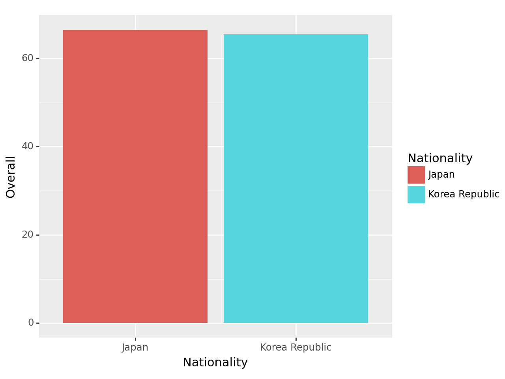
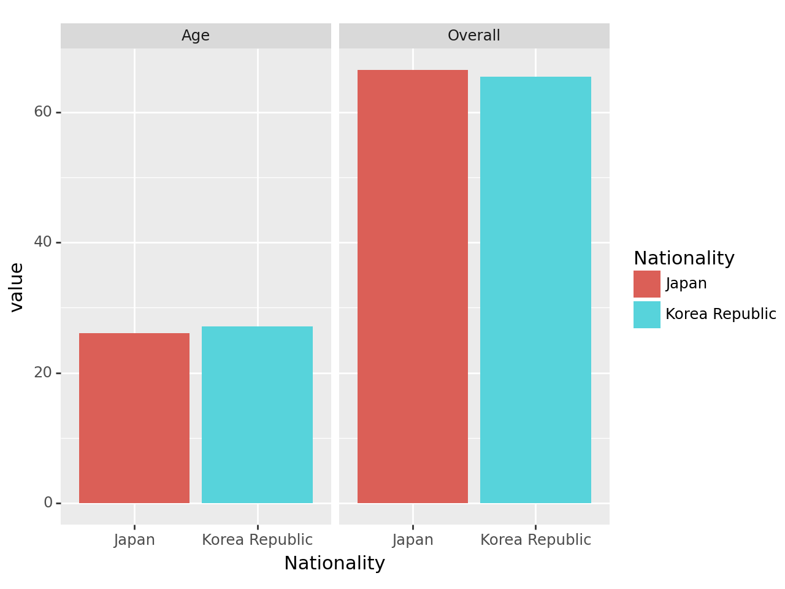

Lesson 15: 심슨의 역설

강의영상
imports
판다스: melt, stack
melt
- 설명:
- 데이터
| Date | Samsung | Apple | Huawei | Xiaomi | Oppo | Mobicel | Motorola | LG | Others | Realme | Nokia | Lenovo | OnePlus | Sony | Asus | ||
|---|---|---|---|---|---|---|---|---|---|---|---|---|---|---|---|---|---|
| 0 | 2019-10 | 461 | 324 | 136 | 109 | 76 | 81 | 43 | 37 | 135 | 28 | 39 | 14 | 22 | 17 | 20 | 17 |
| 1 | 2019-11 | 461 | 358 | 167 | 141 | 86 | 61 | 29 | 36 | 141 | 27 | 29 | 20 | 23 | 10 | 19 | 27 |
| 2 | 2019-12 | 426 | 383 | 143 | 105 | 53 | 45 | 51 | 48 | 129 | 30 | 20 | 26 | 28 | 18 | 18 | 19 |
| 3 | 2020-01 | 677 | 494 | 212 | 187 | 110 | 79 | 65 | 49 | 158 | 23 | 13 | 19 | 19 | 22 | 27 | 22 |
| 4 | 2020-02 | 593 | 520 | 217 | 195 | 112 | 67 | 62 | 71 | 157 | 25 | 18 | 16 | 24 | 18 | 23 | 20 |
| 5 | 2020-03 | 637 | 537 | 246 | 187 | 92 | 66 | 59 | 67 | 145 | 21 | 16 | 24 | 18 | 31 | 22 | 14 |
| 6 | 2020-04 | 647 | 583 | 222 | 154 | 98 | 59 | 48 | 64 | 113 | 20 | 23 | 25 | 19 | 19 | 23 | 21 |
| 7 | 2020-05 | 629 | 518 | 192 | 176 | 91 | 87 | 50 | 66 | 150 | 43 | 27 | 15 | 18 | 19 | 19 | 13 |
| 8 | 2020-06 | 663 | 552 | 209 | 185 | 93 | 69 | 54 | 60 | 140 | 39 | 16 | 16 | 17 | 29 | 25 | 16 |
| 9 | 2020-07 | 599 | 471 | 214 | 193 | 89 | 78 | 65 | 59 | 130 | 40 | 27 | 25 | 21 | 18 | 18 | 12 |
| 10 | 2020-08 | 615 | 567 | 204 | 182 | 105 | 82 | 62 | 42 | 129 | 47 | 16 | 23 | 21 | 27 | 23 | 20 |
| 11 | 2020-09 | 621 | 481 | 230 | 220 | 102 | 88 | 56 | 49 | 143 | 54 | 14 | 15 | 17 | 15 | 19 | 15 |
| 12 | 2020-10 | 637 | 555 | 232 | 203 | 90 | 52 | 63 | 49 | 140 | 33 | 17 | 20 | 22 | 9 | 22 | 21 |
- 사용예시1: 기본사용
- variable: column name들이 들어간다.
- value: column name에 대응하는 값들이 들어간다.
- 사용예시2: id_vars –> tidy data
| Date | variable | value | |
|---|---|---|---|
| 0 | 2019-10 | Samsung | 461 |
| 1 | 2019-11 | Samsung | 461 |
| 2 | 2019-12 | Samsung | 426 |
| 3 | 2020-01 | Samsung | 677 |
| 4 | 2020-02 | Samsung | 593 |
| ... | ... | ... | ... |
| 203 | 2020-06 | Asus | 16 |
| 204 | 2020-07 | Asus | 12 |
| 205 | 2020-08 | Asus | 20 |
| 206 | 2020-09 | Asus | 15 |
| 207 | 2020-10 | Asus | 21 |
208 rows × 3 columns
- 사용예시3:
| variable | value | |
|---|---|---|
| 0 | Samsung | 461 |
| 1 | Samsung | 461 |
| 2 | Samsung | 426 |
| 3 | Samsung | 677 |
| 4 | Samsung | 593 |
| ... | ... | ... |
| 203 | Asus | 16 |
| 204 | Asus | 12 |
| 205 | Asus | 20 |
| 206 | Asus | 15 |
| 207 | Asus | 21 |
208 rows × 2 columns
- 사용예시4: ignore_index=False
| Date | variable | value | |
|---|---|---|---|
| 0 | 2019-10 | Samsung | 461 |
| 1 | 2019-11 | Samsung | 461 |
| 2 | 2019-12 | Samsung | 426 |
| 3 | 2020-01 | Samsung | 677 |
| 4 | 2020-02 | Samsung | 593 |
| ... | ... | ... | ... |
| 203 | 2020-06 | Asus | 16 |
| 204 | 2020-07 | Asus | 12 |
| 205 | 2020-08 | Asus | 20 |
| 206 | 2020-09 | Asus | 15 |
| 207 | 2020-10 | Asus | 21 |
208 rows × 3 columns
| Date | variable | value | |
|---|---|---|---|
| 0 | 2019-10 | Samsung | 461 |
| 1 | 2019-11 | Samsung | 461 |
| 2 | 2019-12 | Samsung | 426 |
| 3 | 2020-01 | Samsung | 677 |
| 4 | 2020-02 | Samsung | 593 |
| ... | ... | ... | ... |
| 203 | 2020-06 | Asus | 16 |
| 204 | 2020-07 | Asus | 12 |
| 205 | 2020-08 | Asus | 20 |
| 206 | 2020-09 | Asus | 15 |
| 207 | 2020-10 | Asus | 21 |
208 rows × 3 columns
stack
- 설명:
df=pd.read_csv('https://raw.githubusercontent.com/PacktPublishing/Pandas-Cookbook/master/data/flights.csv')\
.groupby(["AIRLINE","WEEKDAY"]).agg({"CANCELLED":[np.mean,"count"],"DIVERTED":[np.mean,"count"]})
df| CANCELLED | DIVERTED | ||||
|---|---|---|---|---|---|
| mean | count | mean | count | ||
| AIRLINE | WEEKDAY | ||||
| AA | 1 | 0.032106 | 1277 | 0.004699 | 1277 |
| 2 | 0.007341 | 1226 | 0.001631 | 1226 | |
| 3 | 0.011949 | 1339 | 0.001494 | 1339 | |
| 4 | 0.015004 | 1333 | 0.003751 | 1333 | |
| 5 | 0.014151 | 1272 | 0.000786 | 1272 | |
| ... | ... | ... | ... | ... | ... |
| WN | 3 | 0.014118 | 1275 | 0.001569 | 1275 |
| 4 | 0.007911 | 1264 | 0.003165 | 1264 | |
| 5 | 0.005828 | 1201 | 0.000000 | 1201 | |
| 6 | 0.010132 | 987 | 0.003040 | 987 | |
| 7 | 0.006066 | 1154 | 0.002600 | 1154 | |
98 rows × 4 columns
- 사용예시1
- 사용예시2
df.stack().stack().reset_index().rename({0:'value'},axis=1)
#df.stack().stack().reset_index().rename(columns={'level_2':'aggtype'})| AIRLINE | WEEKDAY | level_2 | level_3 | value | |
|---|---|---|---|---|---|
| 0 | AA | 1 | mean | CANCELLED | 0.032106 |
| 1 | AA | 1 | mean | DIVERTED | 0.004699 |
| 2 | AA | 1 | count | CANCELLED | 1277.000000 |
| 3 | AA | 1 | count | DIVERTED | 1277.000000 |
| 4 | AA | 2 | mean | CANCELLED | 0.007341 |
| ... | ... | ... | ... | ... | ... |
| 387 | WN | 6 | count | DIVERTED | 987.000000 |
| 388 | WN | 7 | mean | CANCELLED | 0.006066 |
| 389 | WN | 7 | mean | DIVERTED | 0.002600 |
| 390 | WN | 7 | count | CANCELLED | 1154.000000 |
| 391 | WN | 7 | count | DIVERTED | 1154.000000 |
392 rows × 5 columns
- 사용예시3 (unstack)
| CANCELLED | DIVERTED | ||||
|---|---|---|---|---|---|
| mean | count | mean | count | ||
| AIRLINE | WEEKDAY | ||||
| AA | 1 | 0.032106 | 1277.0 | 0.004699 | 1277.0 |
| 2 | 0.007341 | 1226.0 | 0.001631 | 1226.0 | |
| 3 | 0.011949 | 1339.0 | 0.001494 | 1339.0 | |
| 4 | 0.015004 | 1333.0 | 0.003751 | 1333.0 | |
| 5 | 0.014151 | 1272.0 | 0.000786 | 1272.0 | |
| ... | ... | ... | ... | ... | ... |
| WN | 3 | 0.014118 | 1275.0 | 0.001569 | 1275.0 |
| 4 | 0.007911 | 1264.0 | 0.003165 | 1264.0 | |
| 5 | 0.005828 | 1201.0 | 0.000000 | 1201.0 | |
| 6 | 0.010132 | 987.0 | 0.003040 | 987.0 | |
| 7 | 0.006066 | 1154.0 | 0.002600 | 1154.0 | |
98 rows × 4 columns
melt, stack 을 set_index와 reset_index와 함께 사용하면 tidydata를 만들기 용이하다.
tidydata
tidydata의 정의
- 느낌: ggplot으로 그림 그리기 좋은 데이터 + pandas로 query, group by 등을 쓰기 좋은 자료
- 정의: https://r4ds.had.co.nz/tidy-data.html
- Each variable must have its own column.
- Each observation must have its own row.
- Each value must have its own cell.
예시1 (tidy data)
| obs | x | y | shape | color |
|---|---|---|---|---|
| 0 | 0 | 0 | ‘star’ | ‘F’ |
| 1 | 0 | 1 | ‘circ’ | ‘F’ |
| 2 | 1 | 0 | ‘star’ | ‘M’ |
| 3 | 1 | 1 | ‘circ’ | ‘M’ |
예시2 (tidy data x)
| shape=star | shape=circ | |
|---|---|---|
| color=F | (0,0) | (0,1) |
| color=M | (1,0) | (1,1) |
예제1: wide df
- data
| Date | Samsung | Apple | Huawei | Xiaomi | Oppo | Mobicel | Motorola | LG | Others | Realme | Nokia | Lenovo | OnePlus | Sony | Asus | ||
|---|---|---|---|---|---|---|---|---|---|---|---|---|---|---|---|---|---|
| 0 | 2019-10 | 461 | 324 | 136 | 109 | 76 | 81 | 43 | 37 | 135 | 28 | 39 | 14 | 22 | 17 | 20 | 17 |
| 1 | 2019-11 | 461 | 358 | 167 | 141 | 86 | 61 | 29 | 36 | 141 | 27 | 29 | 20 | 23 | 10 | 19 | 27 |
| 2 | 2019-12 | 426 | 383 | 143 | 105 | 53 | 45 | 51 | 48 | 129 | 30 | 20 | 26 | 28 | 18 | 18 | 19 |
| 3 | 2020-01 | 677 | 494 | 212 | 187 | 110 | 79 | 65 | 49 | 158 | 23 | 13 | 19 | 19 | 22 | 27 | 22 |
| 4 | 2020-02 | 593 | 520 | 217 | 195 | 112 | 67 | 62 | 71 | 157 | 25 | 18 | 16 | 24 | 18 | 23 | 20 |
| 5 | 2020-03 | 637 | 537 | 246 | 187 | 92 | 66 | 59 | 67 | 145 | 21 | 16 | 24 | 18 | 31 | 22 | 14 |
| 6 | 2020-04 | 647 | 583 | 222 | 154 | 98 | 59 | 48 | 64 | 113 | 20 | 23 | 25 | 19 | 19 | 23 | 21 |
| 7 | 2020-05 | 629 | 518 | 192 | 176 | 91 | 87 | 50 | 66 | 150 | 43 | 27 | 15 | 18 | 19 | 19 | 13 |
| 8 | 2020-06 | 663 | 552 | 209 | 185 | 93 | 69 | 54 | 60 | 140 | 39 | 16 | 16 | 17 | 29 | 25 | 16 |
| 9 | 2020-07 | 599 | 471 | 214 | 193 | 89 | 78 | 65 | 59 | 130 | 40 | 27 | 25 | 21 | 18 | 18 | 12 |
| 10 | 2020-08 | 615 | 567 | 204 | 182 | 105 | 82 | 62 | 42 | 129 | 47 | 16 | 23 | 21 | 27 | 23 | 20 |
| 11 | 2020-09 | 621 | 481 | 230 | 220 | 102 | 88 | 56 | 49 | 143 | 54 | 14 | 15 | 17 | 15 | 19 | 15 |
| 12 | 2020-10 | 637 | 555 | 232 | 203 | 90 | 52 | 63 | 49 | 140 | 33 | 17 | 20 | 22 | 9 | 22 | 21 |
- tidy data 아님
- 정의에 의한 판단: 하나의 observation이 하나의 행을 차지하고 있지 않음.
- 직관적인 판단: 회사별로 색을 다르게 하여 x:‘Date’, y:’판매량’을 하고 싶다면?
- tidydata로 변환 (melt는 너무 쉬우니까 stack으로 해보자)
| Date | Company | Sales | |
|---|---|---|---|
| 0 | 2019-10 | Samsung | 461 |
| 1 | 2019-10 | Apple | 324 |
| 2 | 2019-10 | Huawei | 136 |
| 3 | 2019-10 | Xiaomi | 109 |
| 4 | 2019-10 | Oppo | 76 |
| ... | ... | ... | ... |
| 203 | 2020-10 | Nokia | 20 |
| 204 | 2020-10 | Lenovo | 22 |
| 205 | 2020-10 | OnePlus | 9 |
| 206 | 2020-10 | Sony | 22 |
| 207 | 2020-10 | Asus | 21 |
208 rows × 3 columns
예제2: multi-indexed data
- 데이터
df=pd.read_csv('https://raw.githubusercontent.com/PacktPublishing/Pandas-Cookbook/master/data/flights.csv')\
.groupby(["AIRLINE","WEEKDAY"]).agg({"CANCELLED":[np.mean,"count"],"DIVERTED":[np.mean,"count"]})
df| CANCELLED | DIVERTED | ||||
|---|---|---|---|---|---|
| mean | count | mean | count | ||
| AIRLINE | WEEKDAY | ||||
| AA | 1 | 0.032106 | 1277 | 0.004699 | 1277 |
| 2 | 0.007341 | 1226 | 0.001631 | 1226 | |
| 3 | 0.011949 | 1339 | 0.001494 | 1339 | |
| 4 | 0.015004 | 1333 | 0.003751 | 1333 | |
| 5 | 0.014151 | 1272 | 0.000786 | 1272 | |
| ... | ... | ... | ... | ... | ... |
| WN | 3 | 0.014118 | 1275 | 0.001569 | 1275 |
| 4 | 0.007911 | 1264 | 0.003165 | 1264 | |
| 5 | 0.005828 | 1201 | 0.000000 | 1201 | |
| 6 | 0.010132 | 987 | 0.003040 | 987 | |
| 7 | 0.006066 | 1154 | 0.002600 | 1154 | |
98 rows × 4 columns
- tidy data 아님
- 정의에 의한 판단: 하나의 셀에 여러 관측치가 있음 (표안의 표 느낌)
- 직관적인 판단: WEEKDAY == 4 and mean(CANCELLED) > 0.001 인 자료를 뽑고 싶다면?
- tidydata로 변환 (stack으로 풀면 너무 쉬우니까 melt로 해보자)
| AIRLINE | WEEKDAY | variable_0 | variable_1 | value | |
|---|---|---|---|---|---|
| 0 | AA | 1 | CANCELLED | mean | 0.032106 |
| 1 | AA | 2 | CANCELLED | mean | 0.007341 |
| 2 | AA | 3 | CANCELLED | mean | 0.011949 |
| 3 | AA | 4 | CANCELLED | mean | 0.015004 |
| 4 | AA | 5 | CANCELLED | mean | 0.014151 |
| ... | ... | ... | ... | ... | ... |
| 387 | WN | 3 | DIVERTED | count | 1275.000000 |
| 388 | WN | 4 | DIVERTED | count | 1264.000000 |
| 389 | WN | 5 | DIVERTED | count | 1201.000000 |
| 390 | WN | 6 | DIVERTED | count | 987.000000 |
| 391 | WN | 7 | DIVERTED | count | 1154.000000 |
392 rows × 5 columns
barplot
df = pd.read_csv('https://raw.githubusercontent.com/guebin/DV2021/master/_notebooks/2021-10-25-FIFA22_official_data.csv')\
.query('Nationality=="Korea Republic" or Nationality=="Japan"')\
[['Nationality','Overall','Age']].reset_index(drop=True)
df| Nationality | Overall | Age | |
|---|---|---|---|
| 0 | Korea Republic | 89 | 28 |
| 1 | Japan | 77 | 28 |
| 2 | Japan | 73 | 28 |
| 3 | Korea Republic | 72 | 31 |
| 4 | Japan | 71 | 28 |
| ... | ... | ... | ... |
| 456 | Japan | 59 | 21 |
| 457 | Korea Republic | 60 | 21 |
| 458 | Japan | 54 | 17 |
| 459 | Korea Republic | 51 | 20 |
| 460 | Korea Republic | 58 | 25 |
461 rows × 3 columns
geom_col
- 예시1: 한국과 일본의 평균능력치 비교
| Nationality | Overall | |
|---|---|---|
| 0 | Japan | 66.478873 |
| 1 | Korea Republic | 65.457627 |
- 예시2: 한국과 일본의 평균능력치 비교 (색상변경)
| Nationality | Overall | |
|---|---|---|
| 0 | Japan | 66.478873 |
| 1 | Korea Republic | 65.457627 |
ggplot(data)+geom_col(aes(x='Nationality',y='Overall',fill='Nationality'))
#ggplot(data)+geom_col(aes(x='Nationality',y='Overall',color='Nationality'))
- 예시3: 한국과 일본의 평균연령 비교
| Nationality | Age | |
|---|---|---|
| 0 | Japan | 26.084507 |
| 1 | Korea Republic | 27.158192 |
geom_col + position=‘dodge’
- 예시1: 한국과 일본의 평균연령+평균능력치 비교
geom_col + coord_flip()
- 예시1: 한국과 일본의 평균연령+평균능력치 비교 (90도회전)

geom_col + facet_wrap(var)
- 예시1: 한국과 일본의 평균연령+평균능력치 비교 (면분할)
data=df.groupby('Nationality').agg({'Overall':np.mean,'Age':np.mean})\
.stack().reset_index().rename({0:'value'},axis=1)
data| Nationality | level_1 | value | |
|---|---|---|---|
| 0 | Japan | Overall | 66.478873 |
| 1 | Japan | Age | 26.084507 |
| 2 | Korea Republic | Overall | 65.457627 |
| 3 | Korea Republic | Age | 27.158192 |
ggplot(data)+geom_col(aes(
x='Nationality',
fill='Nationality',
y='value'
),position='dodge')\
+facet_wrap('level_1')
- 예시2: 한국과 일본의 평균연령+평균능력치 비교 (면분할)
geom_col + facet_grid(‘var_y ~ var_x’)
- 예시1: 한국과 일본의 평균연령+평균능력치+최대능력치 비교 (면분할)
data = df.groupby('Nationality')\
.agg({'Overall':[np.mean,np.max],'Age':np.mean})\
.stack().stack().reset_index().rename({0:'value'},axis=1)
data| Nationality | level_1 | level_2 | value | |
|---|---|---|---|---|
| 0 | Japan | max | Overall | 79.000000 |
| 1 | Japan | mean | Age | 26.084507 |
| 2 | Japan | mean | Overall | 66.478873 |
| 3 | Korea Republic | max | Overall | 89.000000 |
| 4 | Korea Republic | mean | Age | 27.158192 |
| 5 | Korea Republic | mean | Overall | 65.457627 |
심슨의 역설
- ref- 데이터 과학자의 사고법: 더 나은 선택을 위한 통계학적 통찰의 힘
- 구매할만한 책입니다
- 버클리대학교의 입학데이터
- 주장: 버클리대학에 gender bias가 존재한다.
- 1973년 가을학기의 입학통계에 따르면 지원하는 남성이 여성보다 훨씬 많이 합격했고, 그 차이가 너무 커서 우연의 일치라 보기 어렵다.
df=pd.read_csv("https://raw.githubusercontent.com/guebin/DV2022/master/posts/Simpson.csv",index_col=0,header=[0,1])\
.stack().stack().reset_index()\
.rename({'level_0':'department','level_1':'result','level_2':'gender',0:'count'},axis=1)
df| department | result | gender | count | |
|---|---|---|---|---|
| 0 | A | fail | female | 19 |
| 1 | A | fail | male | 314 |
| 2 | A | pass | female | 89 |
| 3 | A | pass | male | 511 |
| 4 | B | fail | female | 7 |
| 5 | B | fail | male | 208 |
| 6 | B | pass | female | 18 |
| 7 | B | pass | male | 352 |
| 8 | C | fail | female | 391 |
| 9 | C | fail | male | 204 |
| 10 | C | pass | female | 202 |
| 11 | C | pass | male | 121 |
| 12 | D | fail | female | 244 |
| 13 | D | fail | male | 279 |
| 14 | D | pass | female | 131 |
| 15 | D | pass | male | 138 |
| 16 | E | fail | female | 299 |
| 17 | E | fail | male | 137 |
| 18 | E | pass | female | 94 |
| 19 | E | pass | male | 54 |
| 20 | F | fail | female | 103 |
| 21 | F | fail | male | 149 |
| 22 | F | pass | female | 238 |
| 23 | F | pass | male | 224 |
시각화1: 전체합격률
_df1 = df.groupby(['gender','result'])\
.aggregate({'count':'sum'})\
.stack().reset_index().drop('level_2',axis=1)\
.rename({0:'count2'},axis=1)
_df1| gender | result | count2 | |
|---|---|---|---|
| 0 | female | fail | 1063 |
| 1 | female | pass | 772 |
| 2 | male | fail | 1291 |
| 3 | male | pass | 1400 |
_df2=df.groupby('gender').aggregate({'count':'sum'}).reset_index().rename({'count':'total'},axis=1)
_df2| gender | total | |
|---|---|---|
| 0 | female | 1835 |
| 1 | male | 2691 |
| gender | result | count2 | total | rate | |
|---|---|---|---|---|---|
| 1 | female | pass | 772 | 1835 | 0.420708 |
| 3 | male | pass | 1400 | 2691 | 0.520253 |
- 결론: 남자의 합격률이 더 높다. \(\to\) 성차별이 있어보인다(?)
시각화2: 학과별 합격률
| department | gender | level_2 | total | result | count | rate | |
|---|---|---|---|---|---|---|---|
| 1 | A | female | count | 108 | pass | 89 | 0.824074 |
| 3 | A | male | count | 825 | pass | 511 | 0.619394 |
| 5 | B | female | count | 25 | pass | 18 | 0.720000 |
| 7 | B | male | count | 560 | pass | 352 | 0.628571 |
| 9 | C | female | count | 593 | pass | 202 | 0.340641 |
| 11 | C | male | count | 325 | pass | 121 | 0.372308 |
| 13 | D | female | count | 375 | pass | 131 | 0.349333 |
| 15 | D | male | count | 417 | pass | 138 | 0.330935 |
| 17 | E | female | count | 393 | pass | 94 | 0.239186 |
| 19 | E | male | count | 191 | pass | 54 | 0.282723 |
| 21 | F | female | count | 341 | pass | 238 | 0.697947 |
| 23 | F | male | count | 373 | pass | 224 | 0.600536 |
- 학과별로 살펴보니 오히려 A,B,F,D의 경우 여성의 합격률이 높다.
- 교재에서 설명한 이유: 여성이 합격률이 낮은 학과에만 많이 지원하였기 때문
- 살펴보니 합격률이 높은 A,B학과의 경우 상대적으로 남성이 많이 지원하였음. 합격률이 낮은 C,D학과는 상대적으로 여성이 많이 지원함. D,F의 지원수는 비슷